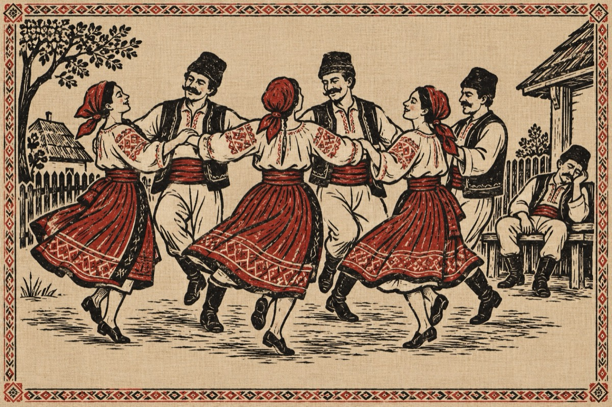

La joc
S-o fo dus la horă-n sat
Măria lui Văsălie
Viorica lui Păsat
Șâ Măriți-a lui Văsâie.
Cu tăche s-or vorovit
Pă iubiți să îi căznească
S-or apucat de horit
Într-o limbă păsărească!...
Ni-te drace, ni-te mă
Hai Ioane țucă-mă
Șâ mă strânje dă mijloc
Ca să ia Văsâie foc!
Învârte-mă Spiridoane,
Șâ ține-o-ntr-o veselie
Că bețâtu meu s-adoarme,
Trezește-te Văsălie!...
Drăguțule de bărbat,
Duhănești șâ ce distrezi,
Ești pilaf dragă Păsat,
Nici nu cred că mă mai vezi
Meri la mumă-ta în pat!
Viorico, țâne-te
Că Păsat s-o fo’ trezât
Șâ în poale umflă-te
Că musai l-ai amețât
Doară mumă-sa bag samă
Ce i-ai zâs s-o auzât
Cred c-o să ce facă zamă
De vorbele ce-ai grăit.
Iar Văsâie, Văsălie,
Împreună cu Păsat,
S-or apucat de bețâie
Până când s-or îmbetat!
Vasile Groza